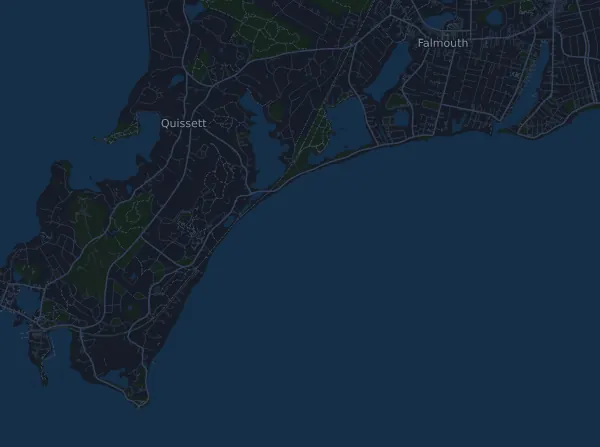

Falmouth Road Race 11,3 km
- Distanse
- 11,3 km
- Høydemeter
- ↑ 73 m
- Høyeste punkt
- 17 moh.
- Underlag
- Vei
- Karakter
- Lett kupert
Høydeprofil
Forbered deg med Mila
Mila er en løpecoach i en app. Legger du et løp inn i planen din, planlegger coachen ukene fram til start etter formen din, og gir deg en tidsprognose og en plan for tempo, drikke og energi i løypa.

Rett økt. Rett dag.
Løypa

Om løypa
ASICS Falmouth Road Race er et gateløp på 11,3 km i Woods Hole, Falmouth, USA. Løypa har 73 høydemeter oppover og 71 nedover, 6,4 m per km, og regnes dermed som lett kupert. Høyeste punkt ligger 17 moh. og laveste −1 moh.
Løypa har ingen sammenhengende stigninger på 25 høydemeter eller mer.
I Mila-appen beskriver coachen løypa i detalj på ditt språk og planlegger tempo og energi for den.
Tempotabell
Falmouth Road Race 11,3 km på 55:00 – tid per km og mellomtider
4:51 per km · km 2,5: 12:08 · km 5: 24:16 · km 7,5: 36:24 · km 10: 48:33 · mål: 55:00
Falmouth Road Race 11,3 km på 1:15:00 – tid per km og mellomtider
6:37 per km · km 2,5: 16:33 · km 5: 33:06 · km 7,5: 49:39 · km 10: 1:06:12 · mål: 1:15:00
Falmouth Road Race 11,3 km på 1:30:00 – tid per km og mellomtider
7:57 per km · km 2,5: 19:52 · km 5: 39:43 · km 7,5: 59:35 · km 10: 1:19:26 · mål: 1:30:00
Tidene forutsetter jevnt tempo hele veien. Det er ren regning, ingen prognose: i bakker, i trengsel og ved drikkestasjoner varierer tempoet.
Vanlige spørsmål
Når går Falmouth Road Race 11,3 km?
Falmouth Road Race 11,3 km går søndag 15. august 2027. Sjekk dato og starttid hos arrangøren.
Hvor langt er Falmouth Road Race 11,3 km, og hvor mange høydemeter er det?
Løpet er 11,3 km langt med 73 høydemeter oppover og 71 nedover. Høyeste punkt ligger 17 moh.
Hvordan er løypa i Falmouth Road Race 11,3 km?
Løypa regnes som lett kupert, med 6,4 høydemeter per km i snitt. Den har ingen sammenhengende stigninger på 25 høydemeter eller mer. Løypa går fra start til et mål på et annet sted. Underlaget er vei.
Hvordan legger jeg opp farten i Falmouth Road Race 11,3 km?
Sikt på en jevn innsats hele veien, og hold igjen de første kilometerne når beina føles friske og feltet drar fra. Løypa er lett kupert, så et jevnt tempo per kilometer fungerer godt. I Mila får du en tempoplan for akkurat denne løypa etter din egen form.
Flere løp som dette
Flere løp i nærheten
- Leadville Trail 100 Run 160,5 km21. august 2027 · Leadville, Colorado, USA
- Speedgoat Mountain Races by UTMB – 50K24. juli 2027 · Snowbird, USA
- Badwater 135 217 km19. juli 2027 · Badwater Basin, Death Valley, USA
- Pikes Peak Marathon 42,2 km19. september 2027 · Manitou Springs, USA
- Hardrock Hundred Mile Endurance Run (Hardrock 100) 161 km9. juli 2027 · Silverton, Colorado, USA
- Western States 100-Mile Endurance Run 161 km26. juni 2027 · Olympic Valley, USA
Forbered deg med Mila
Rett økt. Rett dag.
Opplysningene kommer fra løypefilen og arrangørens informasjon. Sjekk dato, starttider og regler hos arrangøren.
Mila er ikke tilknyttet, sponset av eller godkjent av arrangøren eller løpets sponsorer. Navn og varemerker tilhører sine eiere. Arrangør eller rettighetshaver? Be om endring eller fjerning